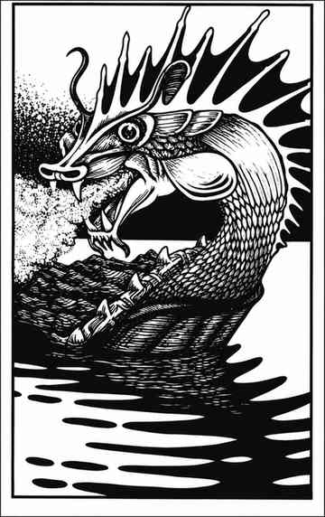

龙龟 · Dragon Turtle
 |
|
龙龟是最令人畏惧的水生生物之一，栖息于大河、大湖与海洋。厚重龟壳使其几乎不受伤害，强力的爪与颚则能轻易撕碎对手。更可怕的是，它能喷出灼热蒸汽云，范围长 6 寸、宽 4 寸、高 4 寸；蒸汽造成等同于龙龟当前生命值的伤害，通过豁免检定则伤害减半。
龙龟的体型、年龄与每颗生命骰的生命值按龙的同类规则决定（见“龙 Dragon”）。若龙龟从大型船只下方浮起，通常会将船掀翻：小船概率为 95%，大船为 50%。龙龟会说自己的语言。
外观。 龙龟的龟壳呈深绿色并带银色高光；四肢与尾部为较浅的绿色，带金色高光；颈部为绿金色并带金色高光，头部与冠部也呈绿金色。